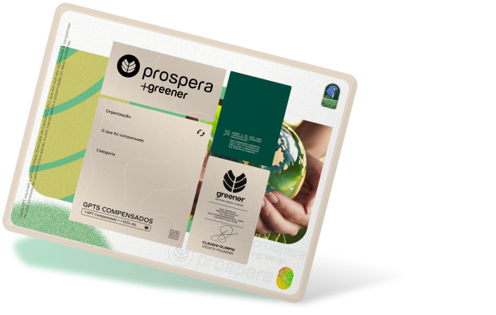
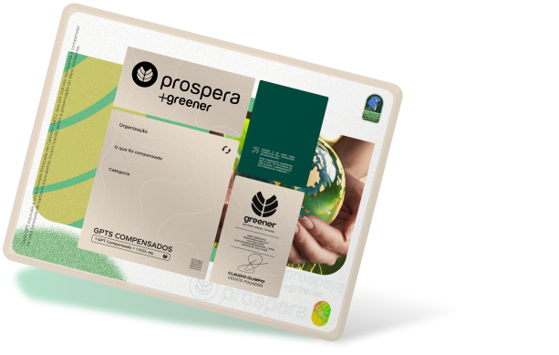

O poder dos Créditos de Carbono
Invista na sustentabilidade com Créditos de Carbono
Desenvolvido com a metodologia da UNESP de “Levantamento de Serviços Ambientais” e validado pela KPMG, este projeto visa manter o estoque de carbono da floresta. Ao reduzir as emissões do desmatamento, contribuímos para mitigaros efeitos das mudanças climáticas.
 

Como funciona o Crédito de Carbono?
O projeto visa à proteção da fauna, flora e dos corpos hídricos que atravessam a área. Ao fazê-lo, contribuirá significativamente para a proteção da biodiversidade, em uma região que enfrenta grande pressão de uso da terra no Estado do Amazonas. A riqueza da biodiversidade na Fazenda Floresta Amazônica é notável, com mais de 60 espécies arbóreas e uma fauna silvestre diversificada.
Além disso, a área apresenta um importante estoque de carbono, com mais de 1.100 toneladas estocadas por hectare, tanto no solo quanto na biomassa vegetal.
Empoderamento e sustentabilidade para Comunidades Ribeirinhas
Nosso projeto beneficia sete vilas ribeirinhas, melhorando a qualidade de vida de mais de 140 pessoas. Com ações de educação ambiental, saúde, infraestrutura e capacitação, em parceria com entidades públicas e privadas, promovemos a participação ativa das comunidades e asseguramos a sustentabilidade a longo prazo.

Calculadora de Emissões: Seu primeiro passo para a sustentabilidade

Com o objetivo de auxiliar nesta etapa e seguindo as rígidas diretrizes do protocolo GHG, a Greener elaborou uma calculadora de emissões automatizada em parceria com a Compensa.eco, empresa especializada em consultoria para cálculo de emissões e inventários de gases de efeito estufa (GEE).
Nossa calculadora é o primeiro passo para as empresas que buscam iniciar a sua jornada de redução e compensação das emissões rumo a sustentabilidade.
De forma simples, prática e rápida, nossa calculadora permite obter um resultado na hora e o inventário das emissões de GEE dos escopos 1 e 2 de empresas e eventos, possibilitando que sejam compensadas as emissões geradas.
Para realização de cálculos mais complexos e incluindo o escopo 3, recomendamos a consultoria personalizada, onde indicamos empresas parcerias e confiáveis para a realização da consultoria especializada com base na demanda de cada cliente.
Impacto socioambiental

A Assinatura Verde contribui para acelerar compromissos assumidos no Pacto Global da ONU, pois aumenta a disponibilidade e acesso da energia limpa e renovável, ao mesmo tempo que ajuda a preservar uma área de mais de 160 mil hectares de floresta nativa na Amazônia, impactando positivamente suas ODS (Objetivos de Desenvolvimento Sustentável):